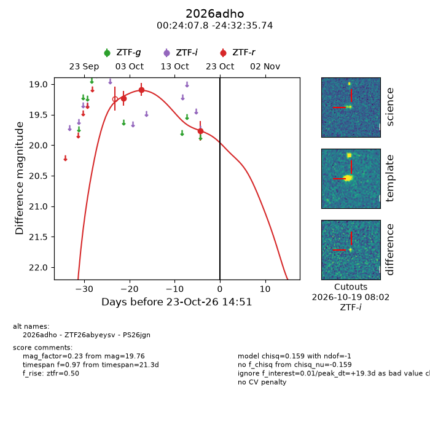
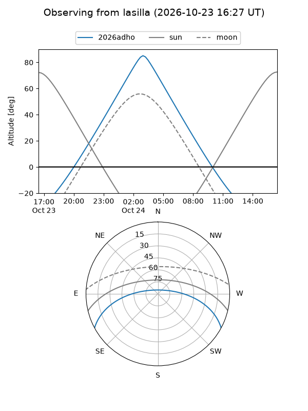
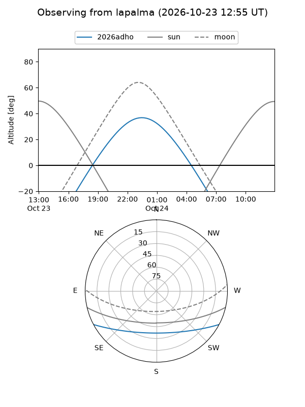
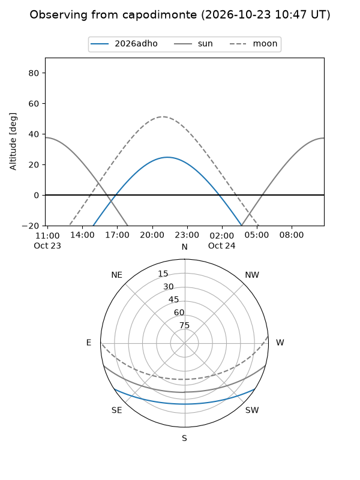
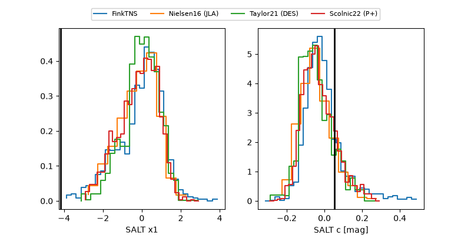

2026adho
Target 2026adho at 2026-10-23 14:54
Aliases and brokers:
FINK-ZTF: ztf.fink-portal.org/ZTF26abyeysv
Lasair-ZTF: lasair-ztf.lsst.ac.uk/objects/ZTF26abyeysv
ALeRCE-ZTF: alerce.online/object/ZTF26abyeysv
YSE-PZ: ziggy.ucolick.org/yse/transient_detail/2026adho
TNS name: wis-tns.org/object/2026adho
Direct TNS query: direct search
alt names
ZTF26abyeysv (ztf,fink_ztf)
2026adho (tns,yse)
PS26jgn (panstarrs)
Coordinates:
equatorial (ra, dec) = 6.0326,-24.54326
equatorial (HMS+DMS) = 00:24:07.83,-24:32:35.74
galactic (l, b) = (54.2331,-83.33535)
Flags:
peak dt: +19.3
Photometry:
last ztfr=19.76
3 ztfr detections
Lightcurve

Visibility



Additional plots
